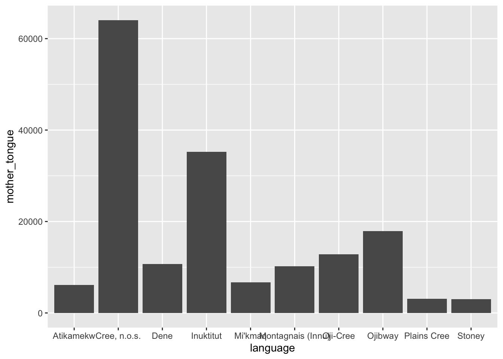
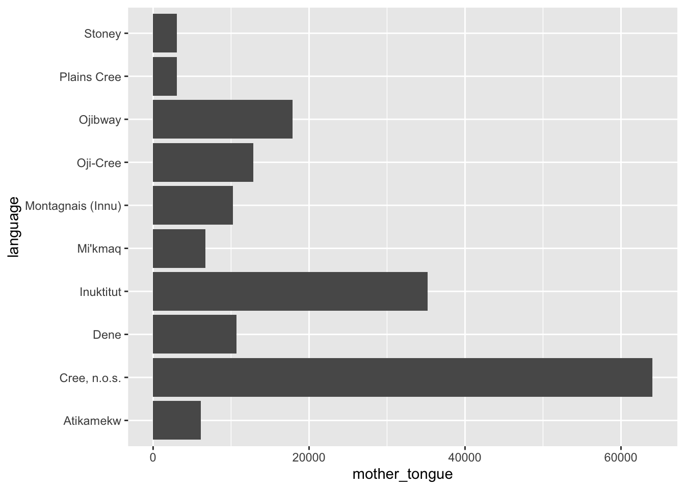
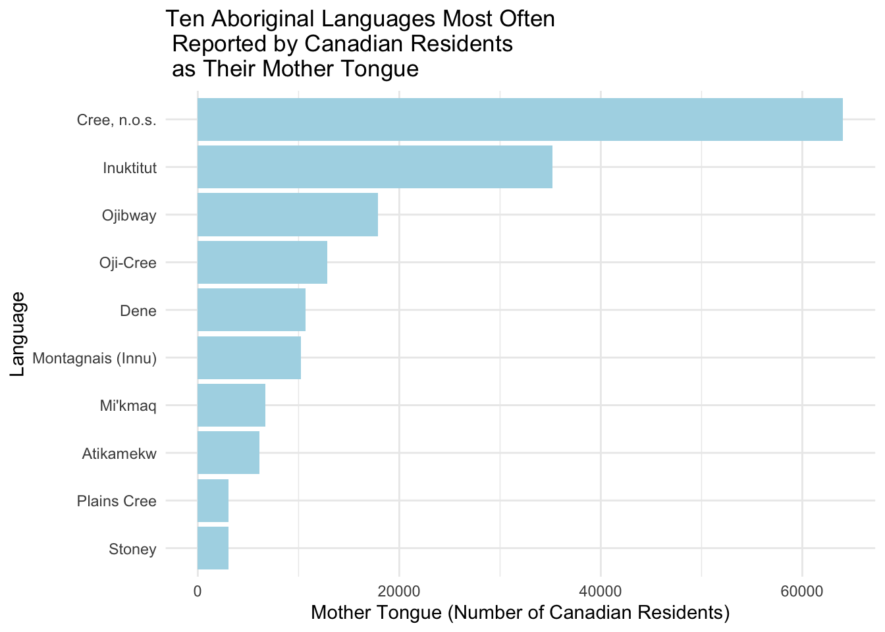
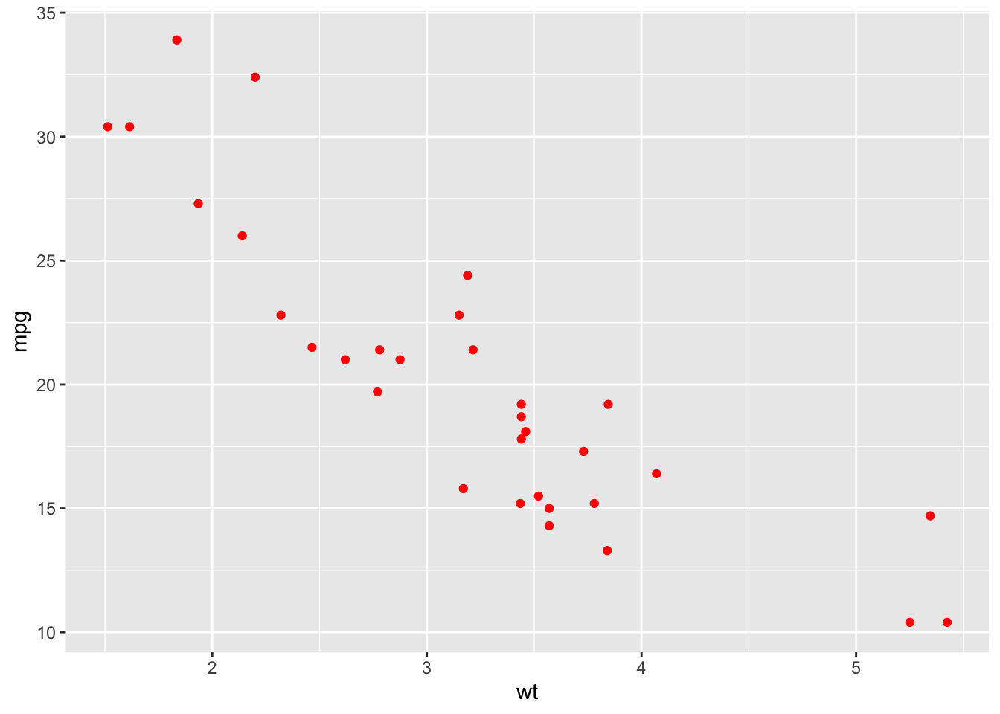
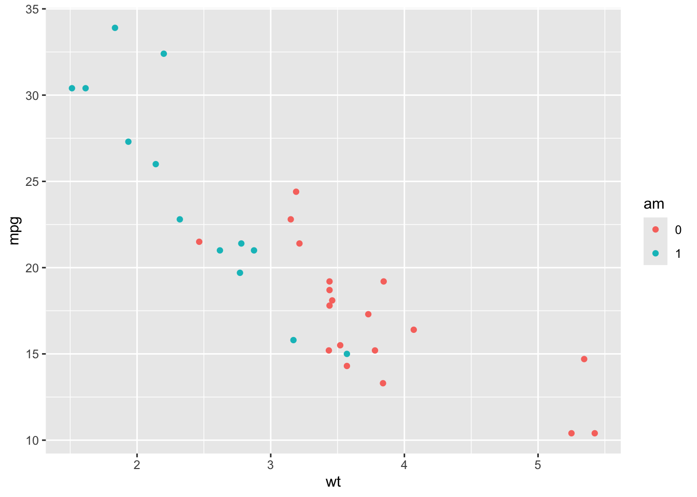
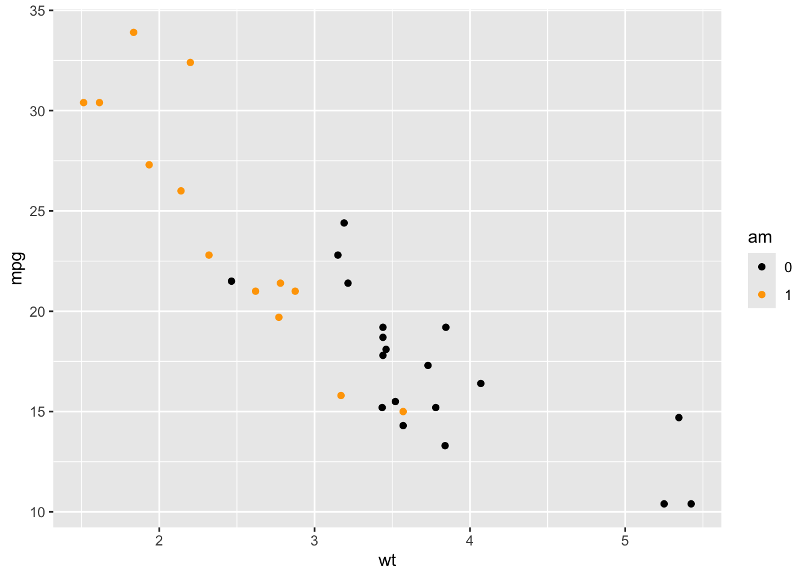
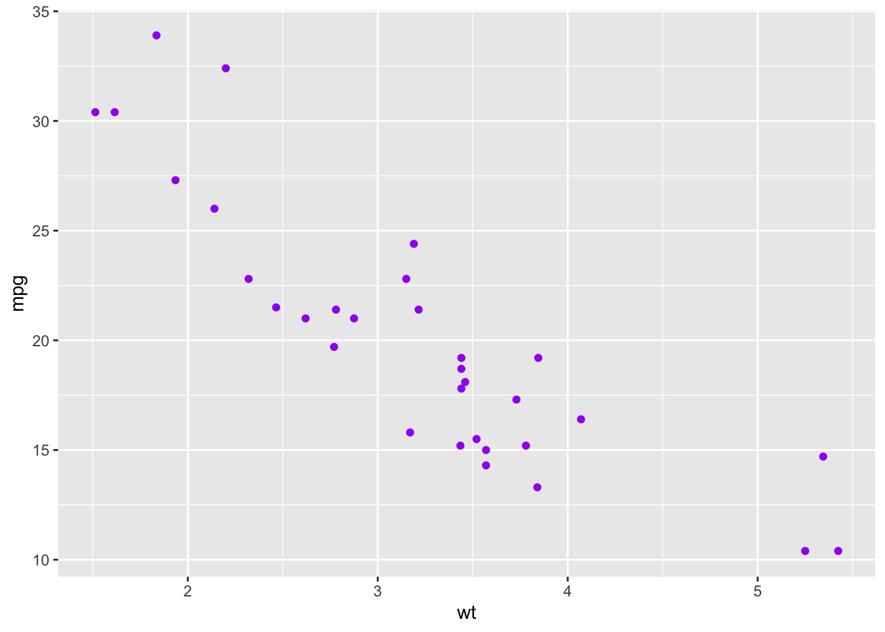

library(tidyverse)Making plots with ggplot2: Barplots and Scatterplots
ggplot2 is a package built within the tidyverse package for creating awesome graphs!

#Import the can_lang dataset
can_lang <- read.csv("https://raw.githubusercontent.com/ttimbers/canlang/master/inst/extdata/can_lang.csv")Recall our Top 10 example:
This code gave a list of 10 Aboriginal Languages which have the most number of people who speak them as their mother tongue:
ten_lang <- can_lang %>%
filter(category == "Aboriginal languages") %>%
arrange(desc(mother_tongue)) %>%
select(language, mother_tongue) %>%
slice(1:10)- 1
-
Start with the
can_langdataset - 2
- Filter for aboriginal languages only
- 3
- arrange the rows from highest number of people who speak the language as their mother tongue, to the lowest number of people who speak the language as their mother tongue
- 4
- only include the language and mother_tongue columns
- 5
- only include the top 10 rows
Barplots
Suppose we wanted to display this information in a barplot instead of in a table. Let’s take a look at the ggplot syntax:

ten_lang %>%
ggplot(aes(x = language, y = mother_tongue)) +
geom_bar(stat = "identity")- 1
-
Begin with the
ten_langdataset - 2
- Create a plot – the x-axis contains the languages and the y-axis contains the number of people who speak the language as their mother tongue. This sets up the coordinate system, but no visualization appears yet.
- 3
-
add a layer with a barplot. The height of the bars should simply be the number of people who speak the language as their mother tongue. Without
stat = "identity",geom_bar()defaults tostat = "count", which means it counts rows instead of using a y-variable.

Is there any improvements we could make to this graph?
To better view text
Display the bars horizontally instead of vertically!
ggplot(ten_lang, aes(x = language, y = mother_tongue)) +
geom_bar(stat = "identity") +
coord_flip()- 1
- This flips the x and y axes!

#OR
ggplot(ten_lang, aes(x = mother_tongue, y = language)) +
geom_bar(stat = "identity") 
Labels, Colors, and Themes
ggplot(ten_lang, aes(x = mother_tongue, y = reorder(language, mother_tongue))) +
geom_bar(fill="lightblue", stat = "identity") +
ylab("Language") +
xlab("Mother Tongue (Number of Canadian Residents)") +
ggtitle("Ten Aboriginal Languages Most Often \n Reported by Canadian Residents \n as Their Mother Tongue") +
theme_minimal()- 1
- The reorder function helps to reorder the languages from highest to lowest value of mother tongue.
- 2
- Changes the colors of the bars to light blue!
- 3
- Updates x-axis label
- 4
- Updates y-axis label
- 5
- adds a title
- 6
- changes the theme

Tip
Barplots are good for displaying one categorical variable and one numeric variable. The number variable could be counts (as above) or they could be averages or totals or maximums or minimums (or many other things!)
ggplot: scatterplot with geom_point
Tip
Scatterplots are good for displaying the relationship between two numerical variables.
The mtcars dataset was extracted from the 1974 Motor Trend US magazine, and comprises fuel consumption and 10 aspects of automobile design and performance for 32 automobiles (1973–74 models). It’s available inside the ggplot package which is already installed.
#load the data
data(mtcars)mtcars %>%
ggplot(aes(x=wt, y=mpg)) +
geom_point()- 1
-
Begin with the
mtcarsdataset - 2
- set up the plot – weight on the x-axis and miles per gallon on the y-axis
- 3
- Adds a scatter plot layer to the plot.

Note that you can change the color, shape (pch for plotting character) and size of these points!
Quick update to the dataset
#code to update `mtcars` dataset so that `am` is treated as a factor rather than a continuous numeric variable
mtcars <- mtcars %>%
mutate(am = as.factor(am)) This modifies the am column, which represents the transmission type of the car (0 = automatic, 1 = manual). The as.factor(am) function converts the am variable from a numeric type (0 or 1) into a categorical factor.
Inside aes() or outside aes()?
What is the difference between these two graphs?
#color not in aesthetics
ggplot(mtcars, aes(x=wt, y=mpg)) +
geom_point(color="red")- 1
- color the same for all points

#color in aesthetics
ggplot(mtcars, aes(x=wt, y=mpg)) +
geom_point(aes(color=am))- 1
- color will vary based on the value of am

Tip
- If the thing you are trying to change (color, shape, size, etc.) depends on a variable, you should put in inside the aesthetics
- If the thing you are trying to change (color, shape, size, etc.) should happen for all things, you should not put it inside the aesthetics.
Customizing Colors in Aesthetics
#color in aesthetics
ggplot(mtcars, aes(x=wt, y=mpg)) +
geom_point(aes(color=am)) +
scale_color_manual(values=c("black", "orange"))- 1
- This updates the two colors to black and orange, instead of the default colors.

Global vs. Local Aesthetics
Global aesthetic mappings apply to all geometries and can be defined when you initially call ggplot(). All the geometries added as layers will default to this mapping. Local aesthetic mappings add additional information or override the default mappings.
#color = am as a global aethetic
ggplot(mtcars, aes(x=wt, y=mpg, color=am)) +
geom_point()
#color = am as a local aethetic
ggplot(mtcars, aes(x=wt, y=mpg)) +
geom_point(aes(color=am))
#overwriting color = am as a global aethetic with a local aesthetic
ggplot(mtcars, aes(x=wt, y=mpg, color=am)) +
geom_point(color="purple")